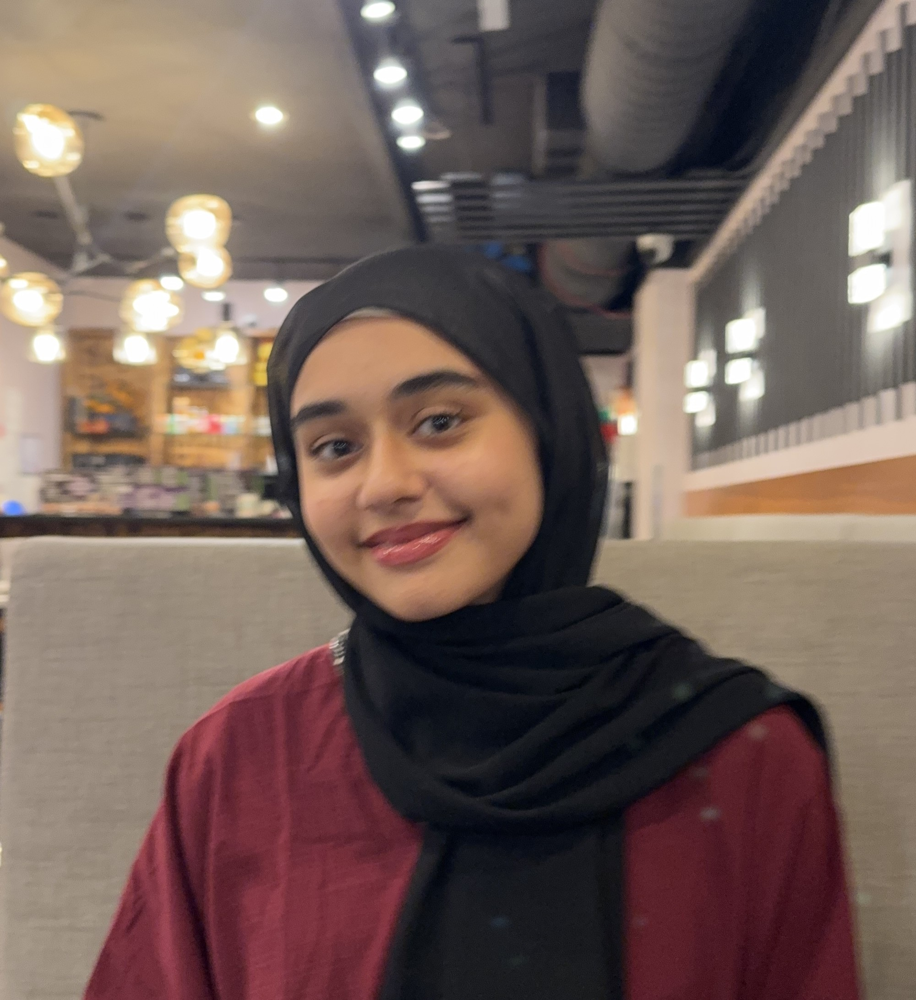

About Me:

Thank you for visiting my website! My name is Huda Halani and I am currently pursuing a degree in computer engineering at the University of Toronto. I am excited to explore opportunities that allow me to utilize my engineering and problem solving expertise to make a positive impact on the world around me. I love to cook, read, and run outdoors in my spare time. Continue reading to explore some of the projects I've done.
2025
T2H - AI Medical Training Platform

Developed Train2Heal (T2H), an AI-powered offline trauma training platform for frontline responders during a hackathon. Built using React Native and TensorFlow Lite, featuring augmented reality wound diagnostics, voice command support, offline medical chatbot, and bilingual UI (English/Arabic). Designed to reduce training time by up to 70% in crisis situations.
2025
Student Event Leaderboard Maker

Built a dynamic student event leaderboard using React (.jsx), Firebase, and SQL for You're Next Career Network. Created real-time ranking system with live updates, podium highlights, and attendance tracking. Integrated Firebase for backend data syncing and designed responsive HTML email templates using SendGrid API.
2025
Python Automated Programs - Unishippers

Developed an automated shipment tracking tool to streamline daily logistics updates using Python. Built a web scraper that parses shipment status from multiple carrier websites using PRO numbers, reducing manual workload. Created an automatic spreadsheet maker that parses information and generates organized reports. Improved operational efficiency by automatically generating consolidated email reports, replacing manual tracking processes.
2025
SafeRoute: A Safety-First Navigation System

I co-developed 'SafeRoute', a safety-first navigation platform aimed at empowering safer campus movement, especially for
women. Built using C++ and a custom graphics engine, SafeRoute integrates OpenStreetMap data with advanced pathfinding
algorithms like Dijkstra’s, A*, and Simulated Annealing to deliver fast and intelligent routing.
2025
Embedded Systems with Nios V

Learned low-level programming, memory-mapped I/O, and embedded systems using C and Nios V assembly on the DE1-SoC board.
Built 'Paddle Ball', a Pong-style game with VGA visuals, PS2 keyboard controls, LED score display, and audio feedback.
Integrated real-time game logic with hardware peripherals, showcasing strong embedded programming and system design
skills.

Completed ECE241, a course in digital logic design with a focus on Verilog, finite state machines, and FPGA
implementation. Designed and implemented 'Brain Blitz', a trivia game on the DE1-SoC board using Verilog and
VGA display. The project featured a timer, sound effects, and real-time user input through hardware keys. Gained experience simulating designs in
ModelSim and deploying them to FPGA hardware.

Completed ECE244, a university-level course focused on object-oriented programming in C++. Gained a strong foundation
in software design principles, including OOP, inheritance, and polymorphism. Developed multiple data
structures such as linked lists, trees, and graphs, and implemented algorithms for parsing, searching, and memory
management.

In the summer of 2024 I joined Headstarter AI, and in a group of 4 I made several projects using AI. We made a AI university information chat bot directed towards highschool students to aid them in making their decision, we made an AI rate my professor, and an AI flashcard generator. I learnt how to use several technologies such as Firebase, Node.js, React, Material-UI, Stripe, and more.

By watching YouTube videos, I learned how to create a website using HTML. This experience taught me how to seek knowledge independently and ignited my passion for coding and web development. While this design is relatively simple, I'm excited to explore new ideas and continue improving the website in the future.

Throughout second semester of first year, during my 'Electric Fields and Circuits' course, we were paired up and built a series of circuits. I participated in various hands-on labs that enhanced my practical understanding of electrical and computer engineering principles.

Utilizing Fusion 360, we designed and tested a prototype that met our client's specific requirements. After working closely with our client for weeks, we presented our solution, and he was thoroughly impressed with our extensive research and attention to detail.
2024
Word Search
Puzzle in C

Using C, I created a word search program in which the user could enter the puzzle, then input a word to find and the program would return the location and direction of the typed up word.
Attached
is the code I developed.

Using C, I coded the game ‘Reversi’ which is a two-player game in which players place tiles on the board to capture the opponent’s pieces until the board is fully occupied.

As a member of a collaborative team of engineers, we worked on a project focused on addressing accessibility challenges within a UofT building.

During high school, I took a construction course where I explored hands-on projects and design. I learnt how to work as a team and follow safety protocols while using powertools, and how to use Google Sketchup.